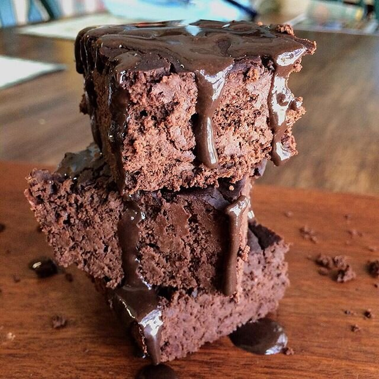

Mint Chocolate (Black Bean) Brownies

Sundays are for baking. Literally all day. These mint chocolate black bean brownies are so fudgey and dense!! This is a good easy recipe to try! Pretty sure brownies are one of my favorite dessert foods because I nevarrrr get sick of them!! And noooo you can't taste the black beans!! You add so much cocoa you can't even tell. :) It's just a nice, lower carb flour alternative and it makes it fudgey!
In 8 days I leave for Washington state (for good!!). It's all becoming a little too real. Saying bye to friends for like...final? I know I will be visiting but I don't think it'll ever really be the same. It'll always be "catching up" rather than hanging out with them. Kinda sucks but meh. I grew up within an hour of my home town (even when I went to college, and worked at the CDC) so I'm soo familiar with the area. It'll be so different not having that sense of familiarity... Kinda weird. But I am definitely excited for the move! New things are exciting. :)️️
Mint Chocolate (Black Bean) Brownies
Makes: 8 brownies
-
1 can of black beans (1.75 cups)
-
1/2 cup liquid egg whites (or 3 egg whites)
-
1/2 cup unsweetened cocoa powder
-
3/4 cup baking stevia
-
3 TBSP coconut oil
-
3-4 drops mint extract (add more to taste)
-
1.5 tsp baking powder
-
1 tsp vanilla extract
Blend EVERRYTHNGGG up! Spray a baking pan (9x9 is good) with nonstick spray and bake at 350 for 22 minutes. Cut into 8 brownies & enjoy. I drizzled mine with more mint chocolate coconut butter!
For 1 brownie: 124 cals; 5 g fat, 15 g carbs (6 g fiber), and 6.5 g protein